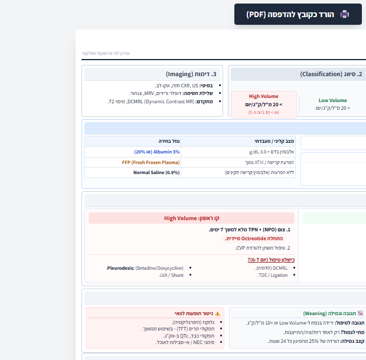

טיפול בכילותורקס בילדים
1
אבחנה
קריטריונים
האבחנה וקריטריוני המעבדה מפורטים באלגוריתם המקורי.
תצוגת מקור הפרוטוקול בנוי כאלגוריתם חזותי; התמונה המקורית נשמרת בתוך הדף כדי לשמור על מבנה ההחלטות.
2
סיווג לפי נפח
Low Volume
מסלול טיפול בהתאם לאלגוריתם המקורי.
High Volume
מסלול טיפול מתקדם בהתאם לאלגוריתם המקורי.
3
ניהול
Imaging
לפי האלגוריתם.
Fluid replacement
לפי נפח הניקוז והמצב הקליני.
Management strategy
המשך טיפול מדורג לפי התגובה.
4
Octreotide וגמילה
Octreotide
מינון, טיטרציה ומשך טיפול לפי האלגוריתם המקורי.
Weaning
גמילה בהתאם לירידה בניקוז ולהנחיות הפרוטוקול.
5
תיסוף, בדיקות וטיפול נוסף
Supplements & labs
כמפורט באלגוריתם.
טיפול ממוקד נוסף
לפי מצב קליני והתגובה לטיפול.
